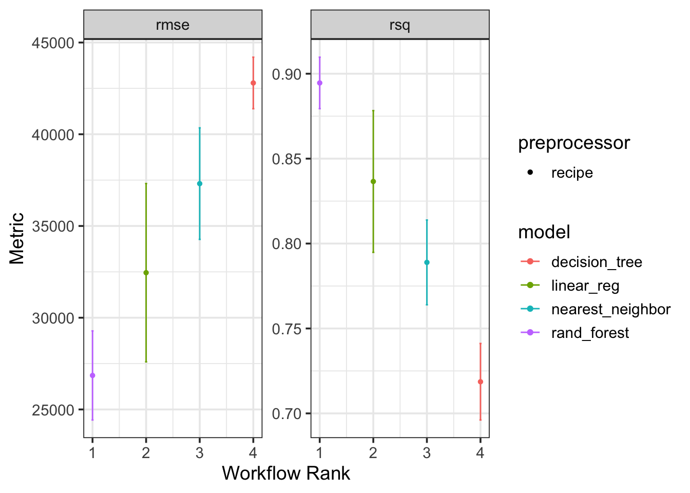
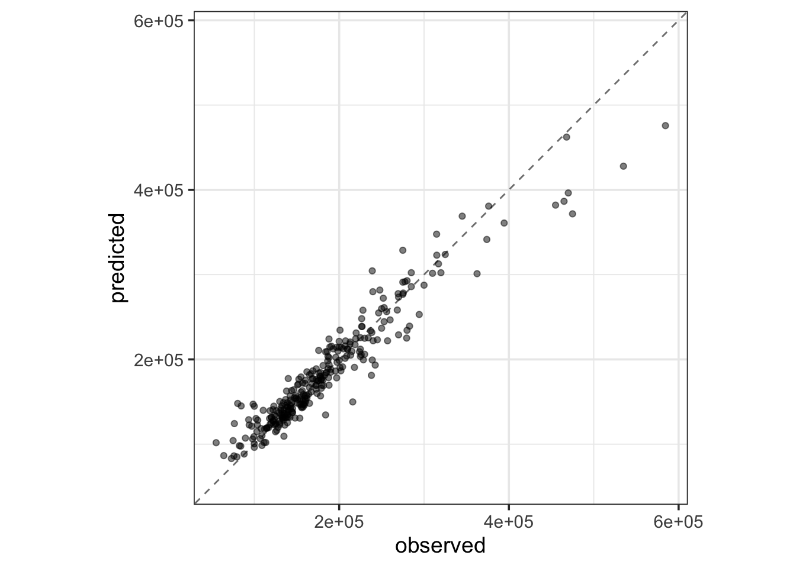

ames_known_price <- ames %>%
filter(!is.na(Sale_Price))
ames_split <- initial_split(ames_known_price, prop = 0.9)
ames_train <- training(ames_split)
ames_test <- testing(ames_split)
ames_folds <- vfold_cv(ames_train, v = 10)Beyond Linear Regression
Recap
Up to this point, we’ve spent our time building, assessing, and interpreting models of the form \(\mathbb{E}\left[y\right] = \beta_0 + \beta_1 x_1 + \beta_2 x_2 + \cdots + \beta_k x_k\). We began with simple linear regressors which included a single predictor variable. We then moved to multiple linear regressors including several terms containing [assumedly] independent predictors. We relaxed this assumption slightly to allow for higher-order terms – terms with a single variable raised to a higher power or terms containing an interaction (product) between two or more predictors. Most recently, we encountered the notion of regularization, which is a term for a technique to constrain our models and reduce the likelihood that a model becomes overfit. While they utilize a slightly different fitting procedure, the Ridge Regression and LASSO models took the form of our familiar linear regression model – a linear combination of the available predictors.
Motivation
There’s no need to be tied to models of the form \(\mathbb{E}\left[y\right] = \beta_0 + \beta_1 x_1 + \beta_2 x_2 + \cdots + \beta_k x_k\). Indeed, any “model” which outputs a numeric prediction can be considered a regression model. Regression simply eludes to the fact that we are predicting a numerical response. There are many classes of model which can be built for this end. Two of the most accessible model classes appear below.
KNN Regressors: \(k\)-nearest neighbors (KNN) regressors assume that observations are most like those observations which are “closest” to them. Such models depend on computing distance between observations such that they can aggregate the responses on those near neighbors to compute a predicted response for any new obervations.
- KNN models are very sensitive to the parameter \(k\), which determines the number of nearest neighbors the model allows to vote on the predicted response.
Decision-Tree Regressors: are regression models which are built using a decision-tree structure (If this, then that…Otherwise…). Since they mimic our own decision-making processes, these decision tree models are very interpretable, even for those people without a technical background.
- Decision-tree models are very prone to overfitting, so we need to use regularization to constrain them.
In tackling regression problems, we aren’t even limited to using a single model. We can build several models for use in either parallel or sequential arrangements.
Random-Forest Regressors: are collections of trees which, individually may make poor predictions, however, when aggregated (averaged), make much stronger predictions. The intuition behind this idea is commonly referred to as the Wisdom of the Crowd.
There are some tricks required for a random-forest regressor to be effective. The prediction errors made by individual trees must be uncorrelated. In order to make this happen, we do two things:
- Each tree is trained on a slightly different dataset, obtained using a procedure called bootstrapping.
- For each tree, and at each juncture, only a randomly selected subset of the predictors are available for the tree to ask questions about.
Boosted Models: are a class of models in which a sequence of very weak learners is trained (these weak learners may be simple linear regression models, single question decision trees, or other highly biased models). The first model in the sequence predicts the value of the response variable. The second model predicts the residual error (the prediction error) made by the first model. The third model predicts the remaining bit of error and so on…
- These models are very sensitive to the number of boosting iterations. Too many rounds of boosting results in an overfit model while too few can result in a model which is underfit.
Due to the nature of these ensembles of models, interpretation can be difficult (or impossible). That being said, they can have excellent predictive value!
Objectives
In this notebook, we’ll accomplish the following:
- See how to create a variety of regression model specifications using the
tidymodelsframework. - Combine model specifications and their corresponding recipes into a
workflow_set(). - Use cross-validation to estimate the predictive value for each of the model classes under consideration.
- Analyze cross-validation performance metrics to identify a “best” model from those considered in the workflow set.
- Fit that best model and use it to make predictions on new data.
The Data
Choose a dataset to use…I’m using ames as a placeholder for now.
Specifying New Classes of Model
The beautiful thing about the {tidymodels} framework that we’ve been utilizing is that it is standardized across all model types. Regardless of the model class, we’ll
- select a model specification and set its fitting engine as well as any hyperparameter values (more on these later).
- create a recipe including a formula and any necessary feature engineering steps
To see a list of many available model classes, check out the parsnip model finder. The parsnip package is what {tidymodels} is using for model definitions.
Let’s create four new model specifications below. We’ll use linear_reg(), decision_tree(), nearest_neighbor(), and rand_forest() to create a linear regressor, decision tree, \(k\)-nearest neighbor, and random forest regressor respectively. Each of the latter three models can be utilized for regression or classification, so we’ll need to set_mode() to "regression" for each of those specifications.
lr_spec <- linear_reg() %>%
set_engine("lm")
tree_reg_spec <- decision_tree(tree_depth = 10, min_n = 3) %>%
set_engine("rpart") %>%
set_mode("regression")
knn_reg_spec <- nearest_neighbor(neighbors = 5) %>%
set_engine("kknn") %>%
set_mode("regression")
rf_reg_spec <- rand_forest(mtry = 9, trees = 50, min_n = 3) %>%
set_engine("ranger") %>%
set_mode("regression")You can see the engines available for each model from the parsnip model finder from above.
Model-Specific Recipes
Sometimes you can get away with a single recipe() that will work across all of your model classes. Be careful though – each model class functions differently and makes different assumptions about your data. For example, a \(k\)-nearest neighbors model is distance-based, so categorical predictors are not natively meaningful for such a model and your predictors must be scaled so that distances in each feature dimension are comparable to one another (an age difference of \(50\) years is a much larger distinction/distance between individuals than a salary difference of \(\$1,000\) per year). Decision tree and random forest models can handle categorical variables in their raw forms, so we don’t need to obtain dummy variables via step_dummy() in order to fit those models.
For the reasons cited above, let’s construct three recipes – one for the linear regressor, one for the nearest neighbor model and one for the tree-based models.
lr_rec <- recipe(Sale_Price ~ ., data = ames_train) %>%
step_impute_median(all_numeric_predictors()) %>%
step_other(all_nominal_predictors()) %>%
step_dummy(all_nominal_predictors())
knn_rec <- recipe(Sale_Price ~ ., data = ames_train) %>%
step_impute_median(all_numeric_predictors()) %>%
step_rm(all_nominal_predictors()) %>%
step_normalize(all_numeric_predictors())
tree_rec <- recipe(Sale_Price ~ ., data = ames_train) %>%
step_impute_median(all_numeric_predictors()) %>%
step_other(all_nominal_predictors())Workflow Sets Rather than Single-Model Workflows
Rather than packaging each model specification and recipe into its own unique workflow(), we’ll utilize a workflow_set() which allows for multiple models to be trained and compared all at once. This is much more efficient than building four separate workflows and comparing the results pairwise.
rec_list <- list(
lr = lr_rec,
knn = knn_rec,
tree1 = tree_rec,
tree2 = tree_rec
)
model_list <- list(
lr = lr_spec,
knn = knn_reg_spec,
tree = tree_reg_spec,
rf = rf_reg_spec
)
my_models_wfs <- workflow_set(rec_list, model_list, cross = FALSE)
my_models_wfs# A workflow set/tibble: 4 × 4
wflow_id info option result
<chr> <list> <list> <list>
1 lr_lr <tibble [1 × 4]> <opts[0]> <list [0]>
2 knn_knn <tibble [1 × 4]> <opts[0]> <list [0]>
3 tree1_tree <tibble [1 × 4]> <opts[0]> <list [0]>
4 tree2_rf <tibble [1 × 4]> <opts[0]> <list [0]>Fitting and Assessing a Workflow Set
In order to fit and assess a workflow set, we’ll need to do just a bit more work than simply calling fit() or fit_resamples(). This is because a workflow_set() is a special objects which requires a fit to be run for each combination of model and recipe (preprocessor). We’ll begin by setting the grid_control() – a set of common options for each fit. Here, we’ll select to save the predictions made by each model/preprocessor, use parallel processing wherever possible in order to speed up the fitting and assessing process, and to save the resulting workflows so that we don’t need to refit from scratch if we find a model and preprocessor combination that we like. Once we have these grid control settings, then we’ll use workflow_map() to fit and assess our model/preprocessor combinations. The arguments we’re using for workflow_map() are a seed (for reproducibility), the resamples we are fitting over (our cross-validation folds), and then the control which is our grid control object.
grid_ctrl <- control_grid(
save_pred = TRUE,
parallel_over = "everything",
save_workflow = TRUE
)
grid_results <- my_models_wfs %>%
workflow_map(
seed = 123,
resamples = ames_folds,
control = grid_ctrl)→ A | warning: prediction from rank-deficient fit; consider predict(., rankdeficient="NA")There were issues with some computations A: x1There were issues with some computations A: x3There were issues with some computations A: x10grid_results %>%
autoplot()
Passing the result of fitting the models in the workflow set to the autoplot() method allows us to quickly compare the performance of each model and preprocessor combination. We can see from the plot that the decision tree regressor is confidently the worst model out of the group – it has the highest RMSE and lowest R-Squared value. The Random Forest regressor seems to be outperforming the the nearest neighbor model and the linear regressor, although the confidence bounds on performance for the random forest and linear model overlap quite a bit. For this reason, we may keep the random forest and linear regression models in the running for “best model”.
We’ll extract that workflow and and select the best parameters (more on this next time) according to the RMSE metric. We’ll finalize the workflow and complete a last fit on the full set of training data. Once we’ve done that, we’ll collect the predictions made for our test observations and then plot a comparison of our predictions versus the true observed Sale Prices for homes.
best_results <- grid_results %>%
extract_workflow_set_result("tree2_rf") %>%
select_best(metric = "rmse")
rf_test_results <- grid_results %>%
extract_workflow("tree2_rf") %>%
finalize_workflow(best_results) %>%
last_fit(split = ames_split)
rf_test_results %>%
collect_metrics() %>%
kable() %>%
kable_styling()| .metric | .estimator | .estimate | .config |
|---|---|---|---|
| rmse | standard | 2.309191e+04 | Preprocessor1_Model1 |
| rsq | standard | 9.191964e-01 | Preprocessor1_Model1 |
rf_test_results %>%
collect_predictions() %>%
ggplot() +
geom_abline(slope = 1, intercept = 0, color = "gray50", lty = "dashed") +
geom_point(aes(x = Sale_Price, y = .pred), alpha = 0.5) +
coord_obs_pred() +
labs(x = "observed", y = "predicted")
Summary
In this notebook we introduced a few new classes of regression model – in particular, k nearest neighbors and decision trees. We also introduced the notion of an ensemble of models and highlighted that these ensembles can consist of models in series (like the gradient boosting model) or in parallel (like the random forest). We saw how to utilize a workflow_set() in conjunction with grid_controls() and a workflow_map() in order to fit and compare a collection of models.
A Look Ahead
For all of our models, we’ve made decisions about the model before it ever saw the training data.
For linear regressors, we need to decide on which predictors to utilize, and how to utilize them. Should we include higher-order polynomial terms, interactions, etc?
For the k nearest neighbors regressor, we needed to choose the number of closest neighbors given voting privileges (
neighbors) in order to make a prediction.For the decision tree regressor, we needed to decide on a maximum depth (
tree_depth) and a minimum number of records to qualify for splitting (min_n).For the random forest regressor, we needed to decide on the number of trees (
trees), the number of predictors available for each split decision (mtry), and the minimum number of records to qualify for splitting (min_n).While we didn’t utilize ridge regression or the LASSO in this notebook, the
penaltyandmixtureparameters needed to be chosen before we trained our models in the previous notebook.
These parameters, which must be set prior to model training, are called hyperparameters. You can see the list of available hyperparameters for each model class from the parsnip model finder. How do we know that we’ve selected the right values for these model-tuning hyperparameters? We don’t – however, we should keep calm, and cross-validate. We’ll discuss more about this in the next set of notes. See you there!